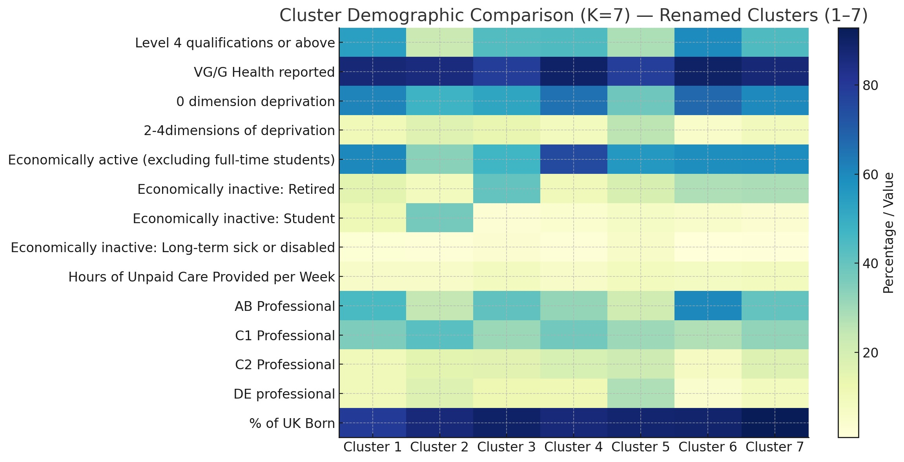

This report presents an analysis of the Winchester constituency, segmented into 7 distinct demographic clusters. These clusters were generated through K-means clustering of 28 demographic measures, all collected at the 2021 Census. Results are displayed at the Output Area Level. Output Areas are the lowest level of geographical area for census statistics, first created after the 2001 Census. OAs are made up of between 40 and 250 households and usually represent a resident population of between 100 and 625 persons.
Total Output Areas: 383
Use the search box below to filter the metrics you wish to compare (e.g., "Health", "Deprivation", "Retired").
| Metric | Cluster 1: Professionals | Cluster 2: Students | Cluster 3: Retirees | Cluster 4: Working Families | Cluster 5: Disadvantaged Areas | Cluster 6: High Performers | Cluster 7: Established Residents |
|---|
The following heatmap displays the key demographic differences between the 7 clusters, highlighting variables such as qualifications, health, economic activity, and deprivation levels.
This segment represents middle-aged, well-educated urban professionals with high levels of economic activity (60.2%) and qualifications (54.0% Level 4+). They report very good health (87.0%) and high stability, primarily working in AB/C1 occupations.
Defined by high population turnover and youth, this cluster has the highest concentration of economically inactive students (37.2%) and young adults aged 15-24. These are shared accommodations, often near the University, characterized by a lower rate of one-person households
These are the areas with a high incidence of retirees, with 40.4% economically inactive retirees and the oldest age profile (highest proportion of 70+ and 85+ residents). They report lower health outcomes and a moderate need for care (8.2 hours/week).
A segment of highly economically active individuals with children, evidenced by the highest rate of single family households (70.7%) and young children (8.6% under 4). The residents are typically non-AB professionals, highly engaged in the workforce (75.2% active).
These are small, deprived pockets with the lowest socio-economic indicators, including the highest rate of 2-4 dimensions of deprivation (25.4%). This segment has the highest proportion of lone-parent families (13.8%) and a higher concentration of DE class occupations (27.7%).
The most affluent and highly qualified segment, dominated by AB professional occupations (60.5%) and degree-level qualifications (59.7%). They boast the highest reported health and 0 dimension deprivation rates.
A stable, long-established segment with the highest percentage of UK-born residents (92.9%) and a high proportion of retired individuals (28.3%). These communities are characterized by strong local ties, providing the highest volume of unpaid care (8.9 hours/week).
Data Source: UK Office for National Statistics, 2021 Census Output Area Data. Created by Felix Lunn.